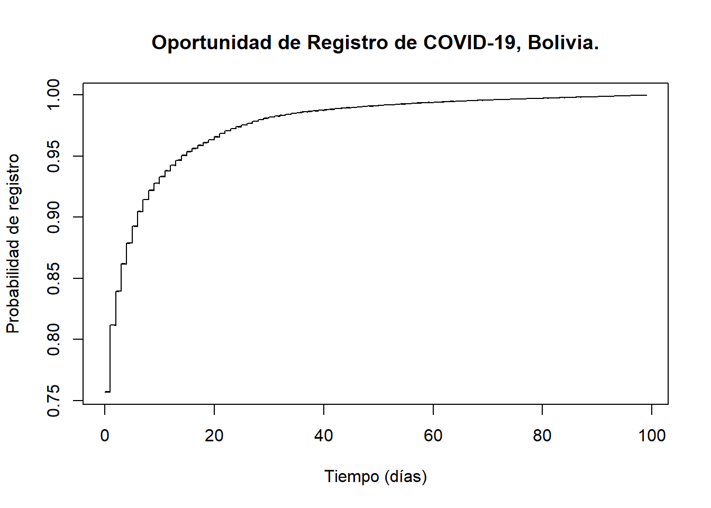
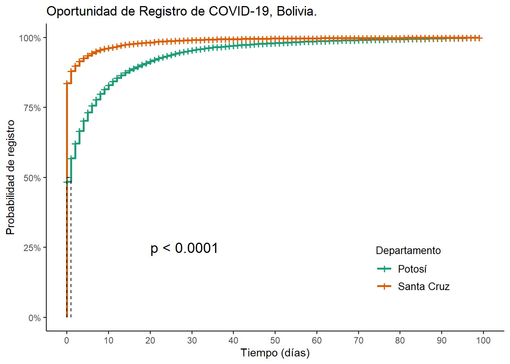

# Librerías -----------------------------------------------------------------
# Instalar y cargar librerías
pacman::p_load(rio, # importar y exportar bases de datos
tidyverse, # manejo de datos
survival, # herramientas para análisis tiempo-evento (sobrevida)
survminer # herramientas para visualizar análisis tiempo-evento
)
# Cargar base de datos ------------------------------------------------------
# Cargar datos de dosis de vacunas covid administradas
data <- import("data/2022-07-07_rnve-covid-2.csv")4 Oportunidad
El análisis de oportunidad se centra en la descripción, para un individuo o grupo de individuos determinado, de un acontecimiento puntual denominado evento que se produce tras un periodo de tiempo denominado tiempo del evento.
4.1 Metodología
4.2 En R
Cargamos los datos y los paquetes
Modificamos la base de datos para incluir una variable calculada de tiempo del evento.
Generamos variables “f_vac” y “f_reg” tipo data para estimar “time” —- usando gramática tidyverse.
## Generar variables "f_vac" y "f_reg" tipo data para estimar "time" ----
# usando gramática tidyverse
surv_data <- data %>% # generar una nueva BBDD para poder volver atrás
# dejar las variables a formato date
mutate(f_vac = as.Date(fecha_vacunacion),
f_reg = as.Date(created_at)) %>%
# generar variable de tiempo
mutate(time = as.double(f_reg - f_vac)) %>%
# en esta base de datos no existen datos censurados por que usamos los datos
# del registro. Para efectos del ejercicio incorporaremos un 10% de datos
# censurados.
# Se asignará el valor "1" para aquellos que tiene fecha de vacunación
# y "0" para aquellos donde no se tiene la fecha de vacunación.
# Será útil entenderlo para cuando quieran estimar Oportunidad de Vacunación.
mutate(event = rbinom(n(), 1, 0.9))
surv_data <- surv_data %>%
filter(time >=0 & time<100)4.2.1 Análisis al tiempo del evento
## Generar un objeto tipo superviviencia ----
survobj <- Surv(time = surv_data$time,
event = surv_data$event)Realizamos el primer ajuste de los datos utilizando una función de sobrevida.
## 4.2 Función de sobrevida ----
fit_1 <- survival::survfit(survobj ~ 1)Visualizamos el ajuste
# Agregamos labs
plot(fit_1,
fun = "event",
xlab = "Tiempo (días)", # etiqueta del eje-x
ylab = "Probabilidad de registro", # etiqueta del eje-y
main = "Oportunidad de Registro de COVID-19, Bolivia." # título
)
4.2.1.1 Comparación de curva
Para este ejercicio seleccionaremos los departamentos de Santa Cruz y Potosí
surv_data2 <- surv_data %>%
filter(dpt_nombre == "SANTA CRUZ" |
dpt_nombre == "POTOSI")Ahora la generamos con el objeto tipo supervivencia anidado (ahorro de líneas).
fit_2 <- survival::survfit(Surv(time = time,
event = event) ~ dpt_nombre,
data = surv_data2)Generar gráfica con las dos curvas —-
# establecer colores
col_dpt <- c("lightgreen", "darkgreen")
## 6.4 Evaluamos la diferencia entre las dos curvas
# calcular el test Log rank
survival::survdiff(
Surv(time, event) ~ dpt_nombre,
data = surv_data2
)Call:
survival::survdiff(formula = Surv(time, event) ~ dpt_nombre,
data = surv_data2)
N Observed Expected (O-E)^2/E (O-E)^2/V
dpt_nombre=POTOSI 822654 740688 1015484 74361 321169
dpt_nombre=SANTA CRUZ 3891010 3501775 3226979 23400 321169
Chisq= 321169 on 1 degrees of freedom, p= <2e-16 # vemos que el p-valor es significativo
## 6.5 Una alternativa
survminer::ggsurvplot(
fit_2,
fun = "event", # función evento
conf.int = FALSE, # no muestra el intervalo de confianza de las estimaciones de KM
surv.scale = "percent", # presenta las probabilidades en el eje y en %
break.time.by = 10, # presenta el eje temporal con un incremento de 10 días
# Etiquetas
xlab = "Tiempo (días)",
ylab = "Probabilidad de registro",
title = "Oportunidad de Registro de COVID-19, Bolivia.",
pval = T, # imprime el valor p de la prueba Log-rank
pval.coord = c(20,.25), # coordenadas para imprimir valor p
# características de la leyenda
legend.title = "Departamento",
legend.labs = c("Potosí","Santa Cruz"),
legend = c(0.8, 0.2),
font.legend = 10,
palette = "Dark2", # especifica la paleta de colores
surv.median.line = "hv", # dibuja líneas horizontales y verticales a las medianas de supervivencia
ggtheme = theme_classic() # simplifica el fondo del gráfico
)